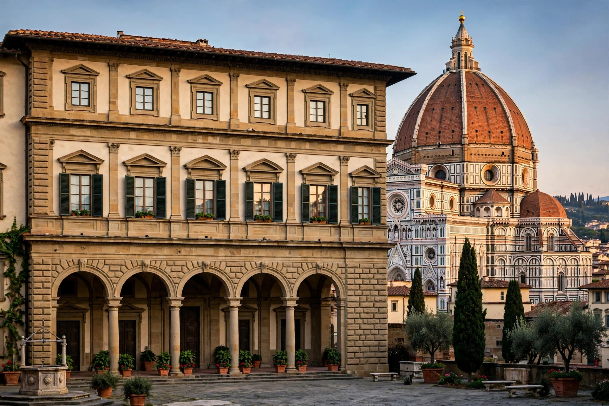

Renaissance architecture is the European architecture of the period between the early 15th and early 17th centuries, demonstrating a conscious revival and development of elements of ancient Greek and Roman thought and material culture. It succeeded Gothic architecture and was followed by Baroque.
Renaissance buildings display symmetry, proportion, geometry and regularity of parts, with classical orders of columns, pilasters, round arches, barrel vaults and domes. Filippo Brunelleschi's dome for Florence Cathedral (1420–36) and his Ospedale degli Innocenti are landmarks of the Early Renaissance in Florence.
Leon Battista Alberti's treatise De re aedificatoria (1452) codified the theory. The High Renaissance in Rome produced Bramante's Tempietto and the rebuilding of St Peter's Basilica; Andrea Palladio's villas in the Veneto spread the style across Europe, and his Four Books of Architecture (1570) influenced building for centuries.